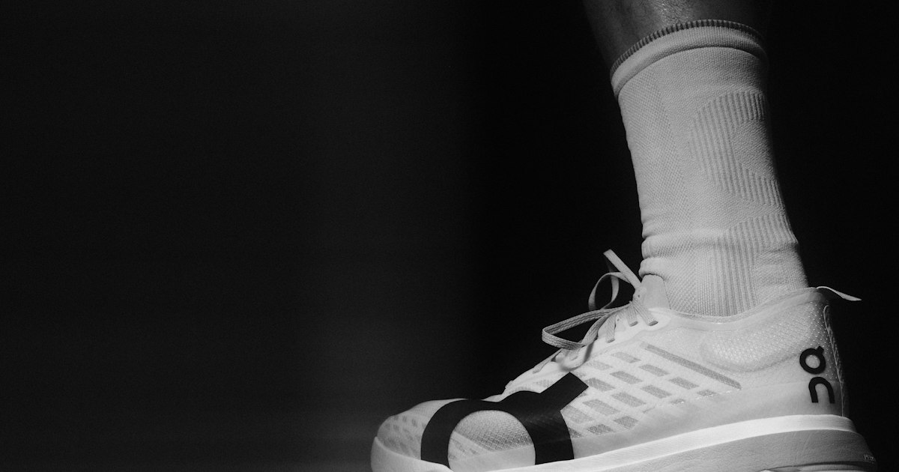

Kiến thức / Chấn thương
Đau gân Achilles ở người chạy bộ: bệnh lý gân gót giữa thân gân

Tóm tắt
Gân Achilles là gân lớn nối cơ bắp chân với xương gót, chịu tải rất cao khi chạy. Bệnh lý thường gặp ở người chạy là bệnh lý gân Achilles phần giữa thân gân (midportion Achilles tendinopathy), biểu hiện đau và cứng ở vùng gân cách chỗ bám gót vài cm, thường rõ khi mới vận động và sáng sớm. Đồng thuận thuật ngữ quốc tế khuyến khích dùng "tendinopathy" thay cho "tendinitis" khi chưa có bằng chứng viêm [4]. Nền tảng điều trị trong hướng dẫn thực hành lâm sàng và các tổng quan là tập vận động có tải [1][5][6]. Bài này không nhằm chẩn đoán; cần thăm khám để phân biệt với các nguyên nhân đau gót và cẳng chân khác.
Định nghĩa và dịch tễ
Hướng dẫn thực hành lâm sàng của Martin và cộng sự (revision 2018) định nghĩa bệnh lý gân Achilles phần giữa thân gân là tình trạng đau, cứng và giảm sức mạnh cơ bắp chân tại vùng giữa gân, liên quan đến tải [1]. Tổng quan hệ thống về chấn thương cơ xương liên quan chạy bộ ghi nhận bệnh lý gân Achilles nằm trong nhóm chẩn đoán thường gặp ở người chạy [2]. Tỷ lệ chính xác thay đổi theo quần thể và không nêu một con số đại diện ở đây.
Cơ chế sinh cơ học
Mô hình liên tục của Cook và Purdam mô tả bệnh lý gân do tải thành các giai đoạn: phản ứng, phục hồi dở dang và thoái hóa. Theo mô hình này, gân có thể chuyển giữa các giai đoạn tùy tải đặt lên gân và thời gian hồi phục, và các giai đoạn đầu có thể hồi phục được nếu tải được điều chỉnh [3]. Mô hình này giúp giải thích vì sao đau gân thường liên quan đến thay đổi đột ngột trong khối lượng hoặc cường độ tập luyện, và vì sao cách điều trị cần theo giai đoạn. Đây là mô hình khái niệm; nghiên cứu mô học cho thấy hình ảnh phức tạp và chưa phải mọi ca đều phù hợp mô hình này.
Yếu tố nguy cơ: bằng chứng ủng hộ và chưa thống nhất
Tổng quan hệ thống của Lorimer và Hume về các yếu tố nguy cơ chấn thương gân Achilles liên quan chạy bộ cho thấy các nghiên cứu chưa đồng nhất; bằng chứng cho từng yếu tố, nhất là yếu tố sinh cơ học, còn hạn chế và chủ yếu từ thiết kế cắt ngang hoặc hồi cứu [7]. Các yếu tố thường được nêu gồm tăng đột ngột khối lượng hoặc cường độ chạy, thay đổi giày hoặc mặt đường, tuổi, và đặc điểm cơ bắp chân-cổ chân. Vì thiết kế nghiên cứu, các mối liên hệ này chưa chứng minh được quan hệ nhân quả.
Liên quan các chỉ số dáng chạy đo được
Gân Achilles chịu tải đặc biệt cao ở pha đẩy. Phân tích gộp của Almeida và cộng sự về kiểu tiếp đất cho thấy chạm mũi bàn làm tăng nhu cầu tải ở nhóm cơ cẳng chân sau và gân gót so với chạm gót, trong khi giảm tải ở gối [8]. Điều này gợi ý thận trọng khi chuyển người chạy đang đau gân sang kiểu chạm mũi bàn. Các chỉ số thường quan tâm gồm:
- Kiểu tiếp đất và vị trí chạm đất: ảnh hưởng chuyển tải giữa gối, cổ chân và gân gót [8].
- Tần số bước và chiều dài sải bước: thay đổi tải ở chi dưới, nhưng bằng chứng riêng cho gân Achilles còn thiếu [9].
- Tư thế bàn chân khi chạm đất (lật vào hoặc ra) và hoạt động cơ bắp chân.
Các chỉ số này có thể ước lượng từ video chạy trên máy chạy bộ bằng công cụ đo như Screening để làm dữ kiện tham khảo cho đánh giá lâm sàng; chưa có ngưỡng chỉ số nào được chứng minh dự báo bệnh lý gân Achilles [7][9]. Xem thêm bài dáng chạy đúng để hiểu từng chỉ số.
Can thiệp có bằng chứng
- Tập tải lệch tâm (eccentric): Alfredson và cộng sự mô tả chương trình tập nâng gót hạ chậm 12 tuần ở người bệnh lý gân mạn tính, với cải thiện đau ở nhóm nhỏ được khảo sát; đây là nghiên cứu cỡ mẫu nhỏ [10]. Phương pháp này trở thành nền tảng của nhiều chương trình sau đó.
- Tập sức mạnh chậm tải nặng (heavy slow resistance): thử nghiệm ngẫu nhiên của Beyer và cộng sự so sánh với tập lệch tâm cho thấy kết cục lâm sàng tương đương, và nhóm tập chậm tải nặng có xu hướng hài lòng và tuân thủ tốt hơn [11].
- Tiếp tục vận động có kiểm soát đau: thử nghiệm của Silbernagel và cộng sự cho thấy người bệnh có thể tiếp tục một số hoạt động thể thao theo mô hình theo dõi đau (pain-monitoring model) trong khi tập phục hồi mà không kết quả kém hơn nhóm nghỉ hoàn toàn [12]. Mô hình dùng mức đau tự đánh giá để điều chỉnh tải, cần được hướng dẫn cụ thể.
- Tổng quan cập nhật: phân tích mạng của van der Vlist và cộng sự cập nhật liên tục các thử nghiệm ngẫu nhiên, xếp tập vận động ở vị trí nền tảng và nhận định chất lượng bằng chứng cho nhiều can thiệp bổ trợ ở mức thấp [5]. Tổng quan về chương trình tập tải cho gân Achilles và gân bánh chè cũng nhấn mạnh tiến triển tải cần cá nhân hóa [6].
Dấu hiệu cần đi khám sớm: đau đột ngột kèm tiếng "bốp" hoặc cảm giác bị đá vào gót, yếu hoặc không nhón gót được, vết bầm hoặc lõm vùng gân (nghi đứt gân); sưng nóng đỏ nhanh; đau ở chỗ bám sát xương gót hoặc sau gót kèm các bệnh lý toàn thân; đau không giảm sau thời gian điều chỉnh tải hợp lý; hoặc đau về đêm. Những tình huống này cần bác sĩ đánh giá, có thể cần chẩn đoán hình ảnh.
Khoảng trống nghiên cứu
- Cơ chế sinh bệnh và vai trò của từng thành phần tải vẫn chưa được làm rõ [3].
- Thiếu nghiên cứu theo dõi dọc về chỉ số dáng chạy dự báo bệnh lý gân Achilles [7].
- Chưa rõ liều tải tối ưu (số lần, cường độ, tần suất) cho từng giai đoạn bệnh [5][6].
- Thiếu thử nghiệm chuyên biệt về huấn luyện lại dáng chạy cho bệnh lý gân Achilles ở người chạy.
Câu hỏi thường gặp
Đau gân Achilles có nên nghỉ hoàn toàn? Các tài liệu nhấn mạnh điều chỉnh tải và tập có tiến triển, trong khi nghỉ hoàn toàn thường không được ưu tiên; mức tải cụ thể cần theo hướng dẫn chuyên môn [12].
Tập lệch tâm có đau không? Một mức đau nhẹ có kiểm soát có thể được chấp nhận trong một số chương trình, theo mô hình theo dõi đau; nên được hướng dẫn trực tiếp [12].
Đau gót có phải viêm cân gan chân không? Hai bệnh lý khác vị trí (sau gót và giữa gân so với dưới gót), nhưng đôi khi cùng tồn tại; xem bài viêm cân gan chân.
Tài liệu tham khảo
- Martin RL, Chimenti R, Cuddeford T, et al. Achilles Pain, Stiffness, and Muscle Power Deficits: Midportion Achilles Tendinopathy Revision 2018. J Orthop Sports Phys Ther. 2018;48(5):A1-A38. doi:10.2519/jospt.2018.0302
- Lopes AD, Hespanhol LC, Yeung SS, Costa LOP. What are the Main Running-Related Musculoskeletal Injuries? Sports Med. 2012;42(10):891-905. doi:10.1007/BF03262301
- Cook JL, Purdam CR. Is tendon pathology a continuum? A pathology model to explain the clinical presentation of load-induced tendinopathy. Br J Sports Med. 2008;43(6):409-416. doi:10.1136/bjsm.2008.051193
- Scott A, Squier K, Alfredson H, et al. ICON 2019: International Scientific Tendinopathy Symposium Consensus: Clinical Terminology. Br J Sports Med. 2019;54(5):260-262. doi:10.1136/bjsports-2019-100885
- van der Vlist AC, Winters M, Weir A, et al. Which treatment is most effective for patients with Achilles tendinopathy? A living systematic review with network meta-analysis of 29 randomised controlled trials. Br J Sports Med. 2020;55(5):249-256. doi:10.1136/bjsports-2019-101872
- Malliaras P, Barton CJ, Reeves ND, Langberg H. Achilles and Patellar Tendinopathy Loading Programmes. Sports Med. 2013;43(4):267-286. doi:10.1007/s40279-013-0019-z
- Lorimer AV, Hume PA. Achilles Tendon Injury Risk Factors Associated with Running. Sports Med. 2014;44(10):1459-1472. doi:10.1007/s40279-014-0209-3
- Almeida MO, Davis IS, Lopes AD. Biomechanical Differences of Foot-Strike Patterns During Running: A Systematic Review With Meta-analysis. J Orthop Sports Phys Ther. 2015;45(10):738-755. doi:10.2519/jospt.2015.6019
- Schubert AG, Kempf J, Heiderscheit BC. Influence of Stride Frequency and Length on Running Mechanics. Sports Health. 2013;6(3):210-217. doi:10.1177/1941738113508544
- Alfredson H, Pietilä T, Jonsson P, Lorentzon R. Heavy-Load Eccentric Calf Muscle Training For the Treatment of Chronic Achilles Tendinosis. Am J Sports Med. 1998;26(3):360-366. doi:10.1177/03635465980260030301
- Beyer R, Kongsgaard M, Hougs Kjær B, Øhlenschlæger T, Kjær M, Magnusson SP. Heavy Slow Resistance Versus Eccentric Training as Treatment for Achilles Tendinopathy. Am J Sports Med. 2015;43(7):1704-1711. doi:10.1177/0363546515584760
- Silbernagel KG, Thomeé R, Eriksson BI, Karlsson J. Continued Sports Activity, Using a Pain-Monitoring Model, during Rehabilitation in Patients with Achilles Tendinopathy. Am J Sports Med. 2007;35(6):897-906. doi:10.1177/0363546506298279
Nội dung mang tính thông tin, không thay thế khám và chẩn đoán của bác sĩ.